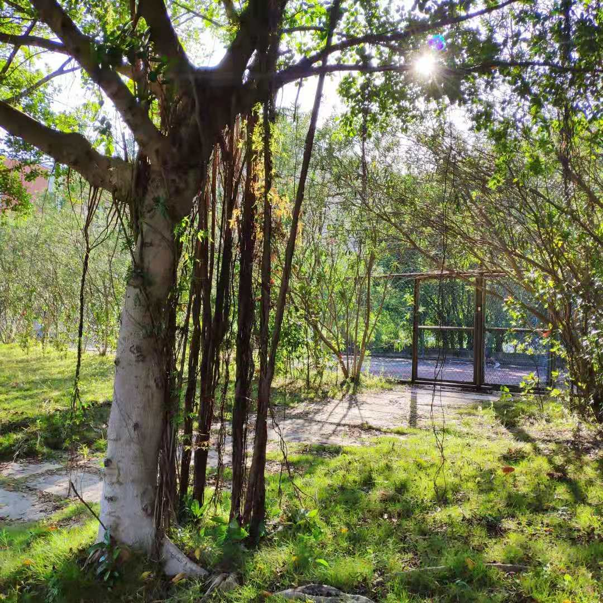

杨焕彤
数字媒体技术/ 2班
基本信息
- 杨焕彤 / 女 / 18.6岁
- 二级甲等
联系方式
技能点
二维码
教育经历
- 中山大学南方学院 - 数字媒体技术专业
喜欢的语录
东野圭吾《嫌疑人X的献身》——“你我都不可能摆脱时间的束缚，彼此都已沦为社会这个时钟的齿轮。一旦少了齿轮，时钟就会出乱子。纵然自己渴望率性而为，周遭也不容许。我们虽然得到了安定，但失去自由却也是不争的事实。”
东野圭吾《嫌疑人X的献身》——“这个世上没有无用的齿轮，只有齿轮自身才能决定自己的用途。” “时间真的很宝贵啊，我要吃，要玩，要和心爱的人手拉手转圈圈，要和好朋友一醉方休。要和我笃定爱着的，也笃定爱着我的人一起做好多事。时间很宝贵，一秒都不愿浪费给任何让我不爽的人。一秒都不行。 ” 工作经历
-
读书读了13年
个人作品
[没有] “别看了，没有QAQ”——[才怪~哈哈哈适度装哔——]